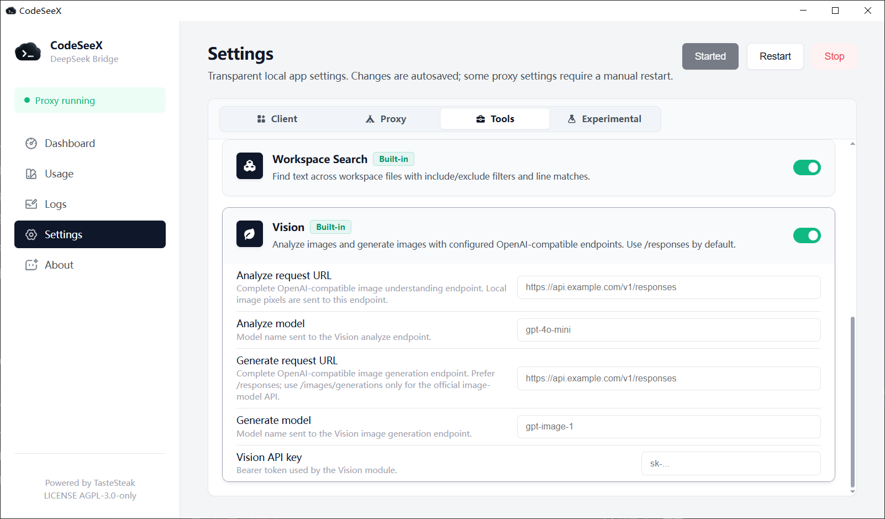
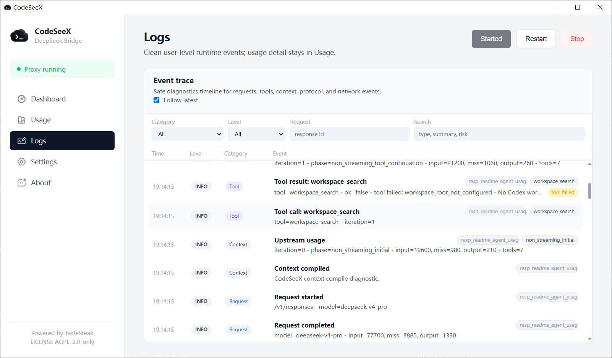

Web Search
Search source probing, fallback ordering, evidence opening, result compaction, and localhost/private-network protections.
CodeSeeX exposes a bounded set of hosted tools, preserves Codex-native client tools, and keeps community tools behind explicit local trust boundaries.

Search source probing, fallback ordering, evidence opening, result compaction, and localhost/private-network protections.
Read-only file and repository inspection tools support large-codebase reasoning without turning every operation into a shell script.
Patch application is handed back to Codex in the expected client-tool shape, with repeated failure diagnostics instead of silent loops.
Optional OpenAI-compatible image analysis and generation endpoints, configured from the desktop manager.
Local command manifests under ~/.codeseex/extension/tools are disabled by default and require explicit trust.
Diagnostics store summaries and hashes where possible, not raw prompts or full tool output.
Tool access is useful only when the runtime can keep it bounded, observable, and scoped.

Local command manifests under ~/.codeseex/extension/tools are disabled by default and require explicit trust.